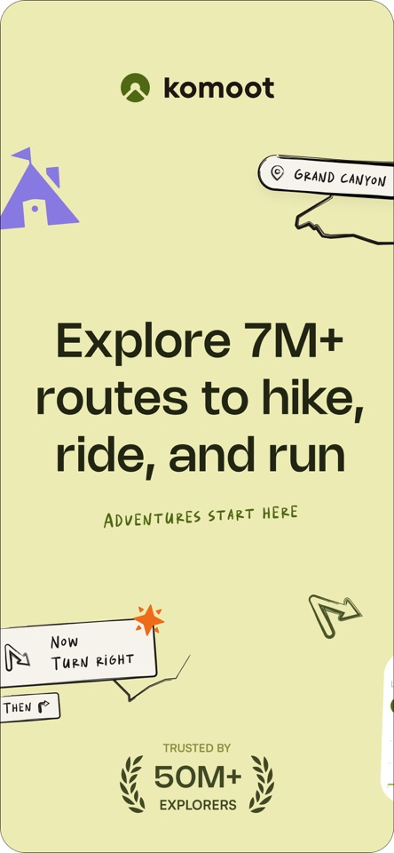
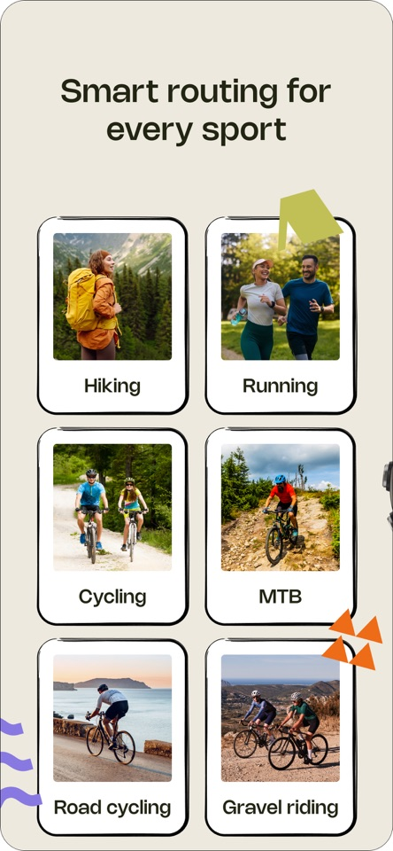

Komoot 路线规划的底层逻辑：为什么它比 Google Maps 更懂爬坡？
从难度标定的多维度函数到设备联动的实时同步机制，拆解这款户外规划工具背后的技术取舍与产品哲学。
我第一次用 Komoot 规划路线时，遇到了一个让我惊讶的细节：同一段林间土路，系统对山地骑行标的是"中等"，对公路骑行却直接判了"不可行"。这不是什么 bug——这是它整套路线规划体系的设计原点。
市面上的户外导航工具不少，但真正把"路线规划"做成一门独立手艺的，Komoot 算一个。为什么官网能做到 Google Maps 做不到的事？答案藏在它对"难度"这个概念的重新定义里。
难度不是一个数字，是一个函数
普通地图的做法很粗暴：两点之间画条直线，算一下总距离和海拔变化，给个预估时间就完事了。Komoot 不这么干。
它的难度标注由三个变量共同决定：路面类型（铺装、砾石、土路、山径）、地形起伏（不只是总爬升，还要看剖面形态——一处长缓坡和一连串短陡坡的体感完全不同）、运动类型（山地骑行、公路骑行、徒步、跑步，各自的基准线不一样）。这三个变量交叉查表，才能得出最终的难度等级。
这套设计的底层假设是：不存在脱离具体运动方式的"路线难度"。一条铺了碎石的乡村小道，对骑山地车的人来说是周末的黄金路线，对骑公路车的人来说是爆胎陷阱。把难度拆成运动类型 × 路面 × 地形的三维函数，才是对用户负责。
代价是计算量翻了几倍——普通地图算一次就行，它要对每种运动类型各算一遍。但这个计算是一次性的，路线生成后存到服务器，用户调运动类型时直接查表返回，响应几乎没延迟。

路网数据从哪来？OSM 不够用
Komoot 的路网数据基础来自 OpenStreetMap，但它做了一层自己的算法加工。OSM 的路面标注粒度很粗——很多路段只标了"unpaved"（未铺装），但用户需要知道的是"这是压实的砾石还是松软的沙土"。
官方的做法是用机器学习模型对 OSM 数据做二次分类：结合该路段的 GPS 轨迹密度、街景相似度、以及用户贡献的"亮点"标记，推断出更细粒度的路面材质。冷门路段的标注可能有滞后，但发现不准的用户可以在活动里留言提醒，形成了"用户贡献 → 模型迭代 → 标注更新"的闭环。
这套机制解释了一个现象：为什么在热门骑行区（比如阿尔卑斯山）Komoot 的路面标注准确度接近专业级，而在冷门地区（比如国内的三四线城市乡间）数据质量就明显下降——不是模型能力不够，是缺少足够的用户贡献作为训练样本。
设备联动：做实时同步，不做事后导出
很多户外工具的设备联动停留在"跑完后导出 GPX 文件"这个层面。Komoot 选了一条更难但体验更好的路：实时同步。
它和 Garmin Connect IQ 应用、Wahoo ELEMNT、Bosch eBike Flow 之间走的是"路线级推送"——你在手机上规划好路线，码表或电助力车机的屏幕上立刻就能看到，拿起来直接出发。具体的设备配对步骤，komoot文档里写得很清楚。和 Apple Health 的联动更隐蔽：活动结束后时间与距离数据自动流入健康应用，不需要任何手动操作。
为什么要花这么大力气做实时？因为户外场景下，"少一次手动导出"和"少走一次返回主屏幕"是完全不同的体验。前者可能意味着在山路上多花三分钟低头操作；后者意味着多关注三分钟前方的路况。Komoot 把技术复杂度换来了用户真正在乎的那几分钟。

免费区域策略：不是获客套路，是产品自信
安装包从下载拿，新用户注册会获得一个免费区域——大致覆盖一座城市及其周边。这个策略看起来像是"先给点甜头再逼你付费"，但细想它的设计逻辑很有意思：
它不是按"功能阉割"来做免费版的——免费区域内的导航、记录、路线生成功能全都是完整的。它用的是"地理围栏"策略：让你在自己最常活动的区域完整体验一遍产品，等你某次旅行需要规划跨区域路线时，自然会掏钱解锁。
这背后藏着一个产品判断：户外路线规划是低频但高价值的行为。用户不会每天规划新路线，但一旦规划，就需要专业级的准确度。让用户在高频区域体验完整功能，在低频区域付费解锁——这个定价模型比按功能分层更聪明，也更公平。
这套设计的边界在哪里
说了这么多好的，也得聊聊它的局限。
首先是语言。应用界面目前只支持 20 种语言，简体中文不在列。虽然导航界面主要靠图形信息（大字号转弯箭头、路线高亮），但对不熟悉英文的用户来说，设置里的专业术语还是有门槛。语音导航的语言可以单独安装，这算是一个补救方案。
其次是冷门地区的数据覆盖。前面说过，Komoot 的路面标注依赖用户贡献的闭环，在户外活动不密集的地区，数据质量会明显下降。规划路线时最好先在地图上目测一遍，不要完全信任难度标注。
最后是设备联动的覆盖面。Garmin 和 Bosch 支持得很好，但国内主流的运动手表品牌（比如高驰、华为）目前还没有官方联动。如果你用这些设备，导出 GPX 还是得手动来。
适合谁？不适合谁？
总结一下这套设计取舍意味着什么：
如果你是一个认真对待户外运动的人——不管是骑行、徒步还是跑步——想把路线规划这件事做对，Komoot 值得花时间上手。它把路线规划从"画个线看看"提升到了"基于路面、地形、运动类型三维计算"的专业水准，而且设备联动做得真正让人省心。
但如果你只是偶尔走一两条成熟徒步道，或者只在城市里骑共享单车，Google Maps 的基础规划可能就够了。Komoot 的专业性有它的使用门槛，免费区域的限制也意味着你得先决定要不要为核心区域付费。
我自己用下来的感受是：它不是在和 Google Maps 抢用户，而是在做 Google Maps 根本做不了的事——让路线规划这件事本身变成一种乐趣。把难度拆解成函数、用机器学习加工路网数据、把实时同步做进每个设备——这些设计决策背后，是一群真正懂户外的人在做产品，而不是一群地图工程师在加功能。关于 Komoot 的这些资料，我同步维护在 GitHub、Gitee 和 GitCode 上，考虑到不同地区的网络可达性，多放一个备份总没坏处。